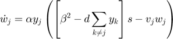

Script for testing complex pattern recognition: digits
Nov. 17, 2019 ver 0.1
We compute the mean and standard deviation of the accuracy of OptionC and OptionD over a some (readDigits) MINST database patterns (20x20 images of digits)
Option D:
Option C:

readDigits = 20
We get very good results for both except the mean is greater for OptionD and has a considerably smaller standard deviation:
Mean accuracy OptionC: 0.795 Standard deviation OptionC: 0.1301
Mean accuracy OptionD: 0.88 Standard deviation OptionD: 0.0823
Contents
Compute resluts
clear close all path(path,'MatFunc') readDigits = 20; n = 20*20; % neuron dimension M = 100; % number of neurons L = readDigits; % number of stimuli it = 10; % number of iterations resultsC = zeros(1,it); resultsD = zeros(1,it); for i = 1:it i rng(i); % use different initial values offset = randi(30000); % offset to read in the database % read the database [p, ~] = readMNIST("train-images.idx3-ubyte","train-labels.idx1-ubyte", readDigits, offset); for j=1:readDigits p(:,:,j) = p(:,:,j)/norm(p(:,:,j)); % normalize aux = p(:,:,j)'; s(:,j) = aux(:); % linearize end [acC,acD] = accuracyPatterns(n,M,L,s); resultsC(i) = acC; resultsD(i) = acD; end meanC = mean(resultsC) % mean stdevC = std(resultsC) % standard deviation meanD = mean(resultsD) stdevD = std(resultsD)
i =
1
i =
2
i =
3
i =
4
i =
5
i =
6
i =
7
i =
8
i =
9
i =
10
meanC =
0.7950
stdevC =
0.1301
meanD =
0.8800
stdevD =
0.0823